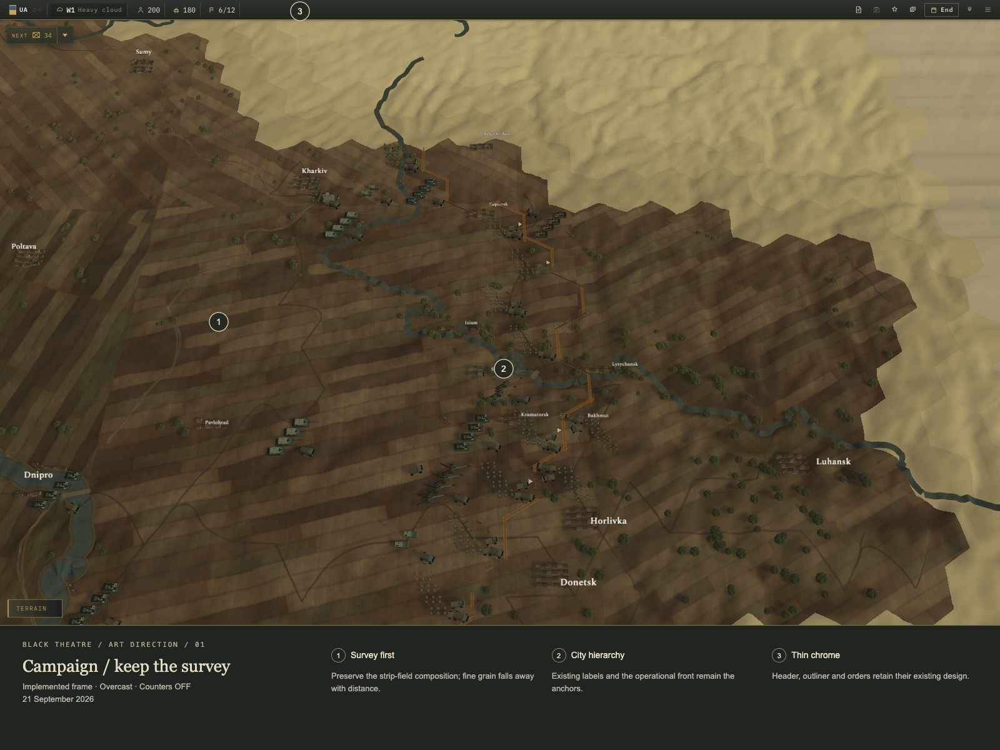
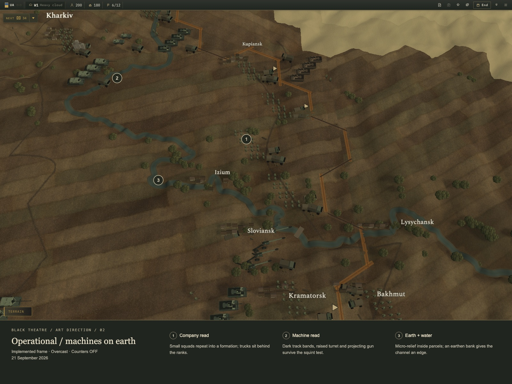
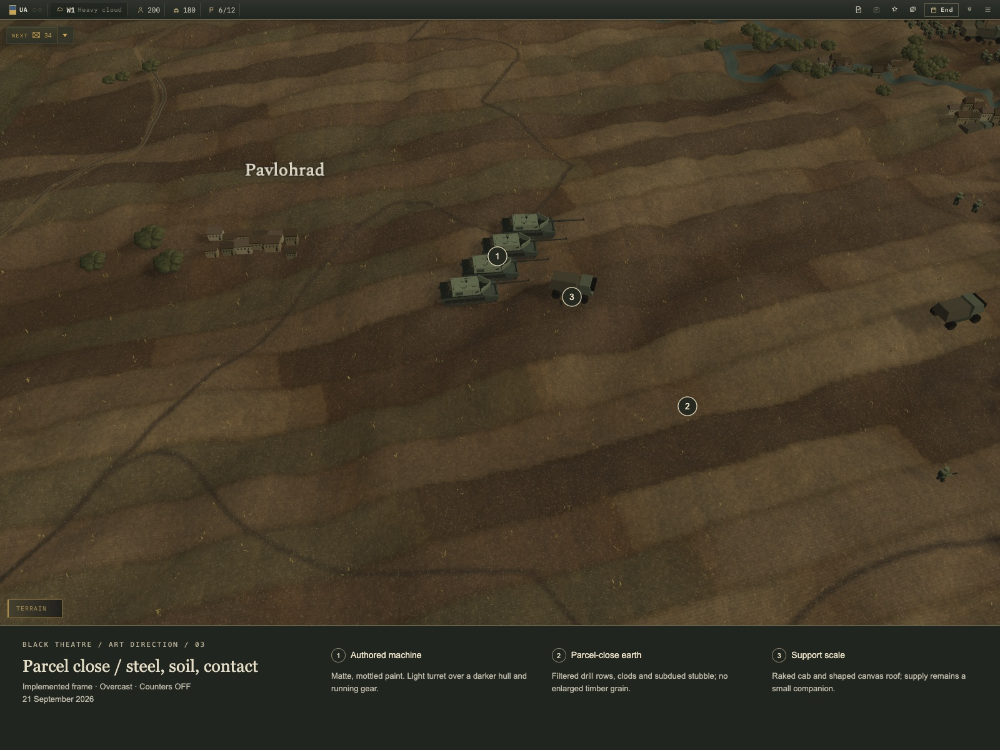
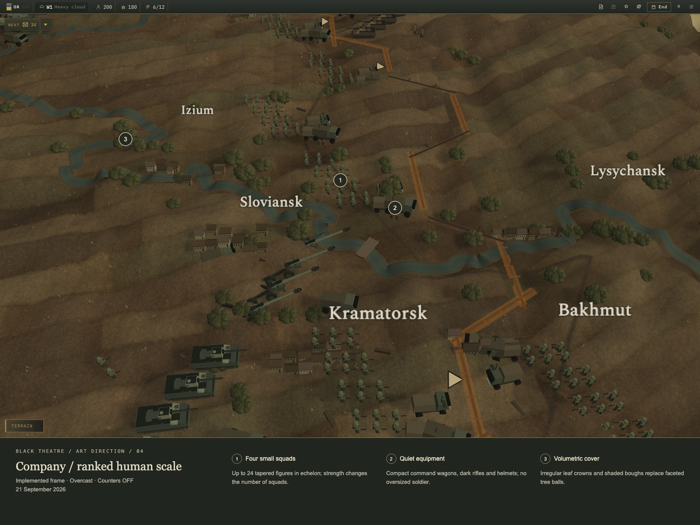
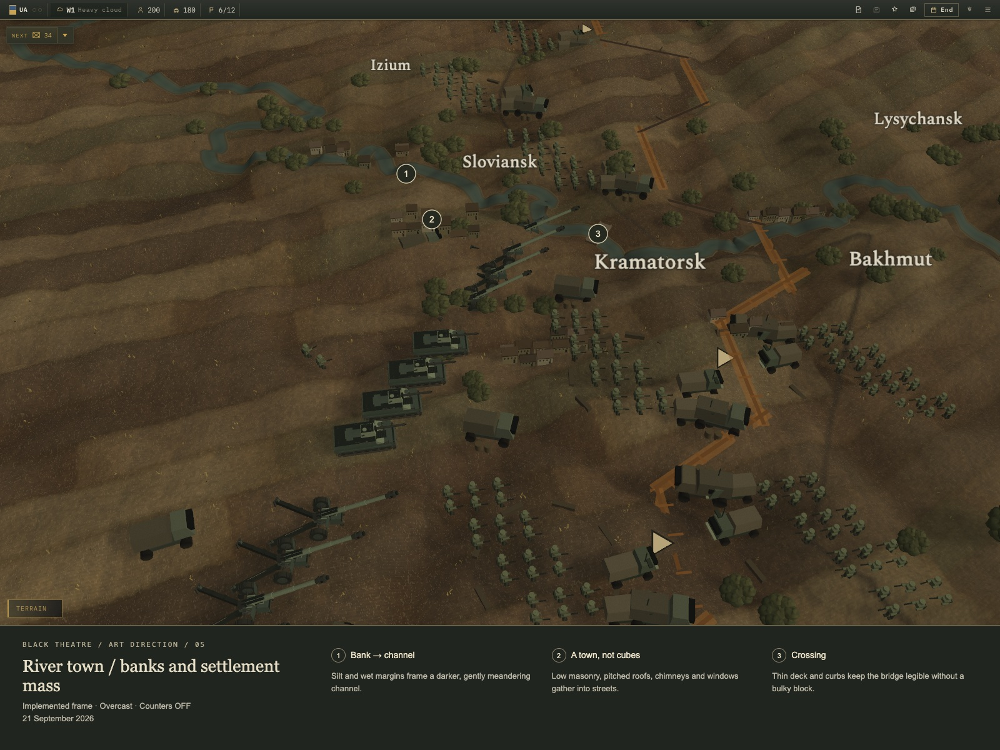

BLACK THEATRE / Earth and machines
Five annotated captures of the implemented presentation pass. Direction, priorities and validation notes.

Existing composition, city typography and subtractive chrome. Detail recedes into the same cadastral earth.
Echelon silhouettes and company ranks. Broken woodland crowns, banked water and quiet parcel grain.
Dark running gear, lighter turret, a distinct gun. Fine drill rows and clods resolve inside the existing surveyed fields.
Four small squads, tapered figures and restrained equipment. Trucks remain subordinate to the rank silhouette.
Wet bank → shallow water → dark channel. Pitched roofs, eaves and streets replace scattered grey blocks.